Turn-Base Puzzle game made by 5 people in 2
weeks for the 15th PIRATE SOFTWARE
GameJam. Made in
Unity, programmed in C# and published on Itch.io.
Role: Gameplay Programmer
Start Date: 17/07/2024
End Date: 31/07/2024
Used Technologies: C#, Unity
MY MAIN CONTRIBUTIONS
Enemy Vision System
Level Selector System
PowerUps System
Enviroment System (Walls Collisions, Breakable Floors…)
Game Loop
Bug Fixing
Website
TFG: High Dimensions Game
This is my Final Degree Project (TFG) made alone. This project involves creating a
video game prototype where the main mechanic allows the player to see in 2D
while existing in a 3D world.
This means you can only see the elements of
the 3D world that intersect the 2D plane. When
you
rotate your character in the 3D world,
your 2D view and map change and become distorted according to the 3D environment.
If you are curious, watch the making of and
try the game.
Role: Main Developer
Start Date: 12/02/2024
End Date: 30/06/2024
Used Technologies: C#, Unity
MY MAIN CONTRIBUTIONS
World Dimension mechanics
Gameplay Programming
Game Objectives
Level Design
Repository
Ted is out of bed
Game made by 5 people in 6 days for the 7th
CITM Game Jam.
Made in Unity, programmed in C# and published on Itch.io.

Role: Gameplay Programmer
Start Date :26/01/2024
End Date : 1/02/2024
Used Technologies : C#, Unity
MY MAIN CONTRIBUTIONS
UI Sprites
Level Design
Game Design
Spawners, Shield, Enemy, UI Logic
Bug Fixing
Repository
Guardins of the galaxy: The bet
Top-Down Action Shooting game set in the
Marvel Universe.
Made in C++ with a game engine created by a student. The project was created by 29 students
for Project 3 at CITM.
Top-Down Action Shooting game set in the
Marvel Universe